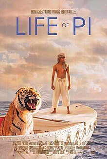

პიც ცხოვრება (ინგლ. Life of Pi) — 2012 წლის ამერიკული 3D სათავგადასავლო დრამატული ფილმი. იგი ეფუძნება იან მარტელის ამავე სახელწოდების 2001 წლის რომანს. მისი რეჟისორია ენგ ლი, ხოლო სცენარი ადაპტირებულია დევიდ მეგის მიერ. ფილმში როლებს ასრულებენ სურაჯ შარმა, ირფან ხანი, ტაბუ, რაფე სპალი, ადილ ჰუსეინი და ჟერარ დეპარდიე. ფილმის პრემიერა გაიმართა ნიუ-იორკის კინოფესტივალის ფარგლებში, 2012 წლის სექტემბერს.[2]
